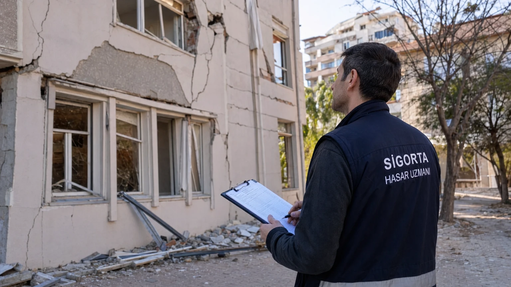

Deprem Hasarı Tazminat Süreci – DASK ve Konut Sigortasından Nasıl Alınır?
Deprem oldu, binanız hasar gördü. DASK poliçeniz var ama tazminat nasıl alacağınızı bilmiyorsunuz? 2023 Kahramanmaraş depreminde 250 milyar TL tazminat ödendi — ama pek çok kişi süreci bilmediği için geç ya da eksik aldı. İşte adım adım rehber.
Adım 1: Hasarı 60 Gün İçinde Bildirin
DASK'ta hasar bildirme süresi yasal olarak 60 gündür. Bu süre geçerse tazminat hakkını kaybedebilirsiniz. Bildirim yolları: DASK çağrı merkezi: 125 (7/24), online: dask.gov.tr, acenteniz üzerinden. Bildirirken: poliçe numarası, T.C. kimlik, hasarlı yapının adresi ve hasar özeti hazır olsun.
Adım 2: Hasar Tespiti ve Eksper
Bildirim sonrası DASK 1-2 hafta içinde lisanslı bir eksper gönderir. Eksper bina hasarını yerinde inceler, fotoğraflar çeker, rapor hazırlar. Önemli: Eksper gelmeden binada büyük onarım yapmayın — hasar delilleri bozulabilir. Hasarın fotoğraflarını ve videolarını önceden çekip saklayın.
Adım 3: Tazminat Miktarı Belirleme
Eksper raporu sonrası DASK tazminat miktarını belirler. Hesaplamada: binanın türü, yaşı, hasar oranı ve poliçe limiti dikkate alınır. Limit: 2026 itibarıyla azami 640.000 TL. Ödeme genellikle 15-30 iş günü içinde banka hesabınıza gelir.
İtiraz Hakkınız
Tazminat miktarına itiraz edebilirsiniz. Süreç: 1. DASK'a yazılı itiraz (15 gün içinde). 2. Sigorta Tahkim Komisyonu'na başvuru (2.500 TL teminat + 250-4.000 TL komisyon). 3. Mahkeme yolu (avukat gerekebilir). İtirazların önemli bir kısmı daha yüksek ödeme ile sonuçlanıyor — hakkınızı koruyun.
Konut Sigortasından Tazminat
Konut sigortası poliçeniz varsa, DASK'tan bağımsız olarak ayrıca başvurmalısınız. Sigorta şirketinize 24-72 saat içinde hasar bildirimi yapın. Süreç benzer: bildirim → eksper → tazminat. Dikkat: Bazı poliçelerde 'muafiyet tutarı' (franchise) olabilir — belirli bir miktarın altındaki hasarlar ödenmez.
Pratik İpuçları
1. Hasar belgelerini (fotoğraf, video, resmi tutanak) birden fazla yerde yedekleyin. 2. Poliçe numaranızı telefonunuza kaydedin. 3. Eksper randevusunda evde olun. 4. Hasarı küçümseyip beyan etmeyin — eksper zaten görecek. 5. Komşularla koordineli hareket edin (site bazında toplu başvuru daha hızlı sonuçlanır). DASK hakkında daha fazla bilgi için tıklayın.